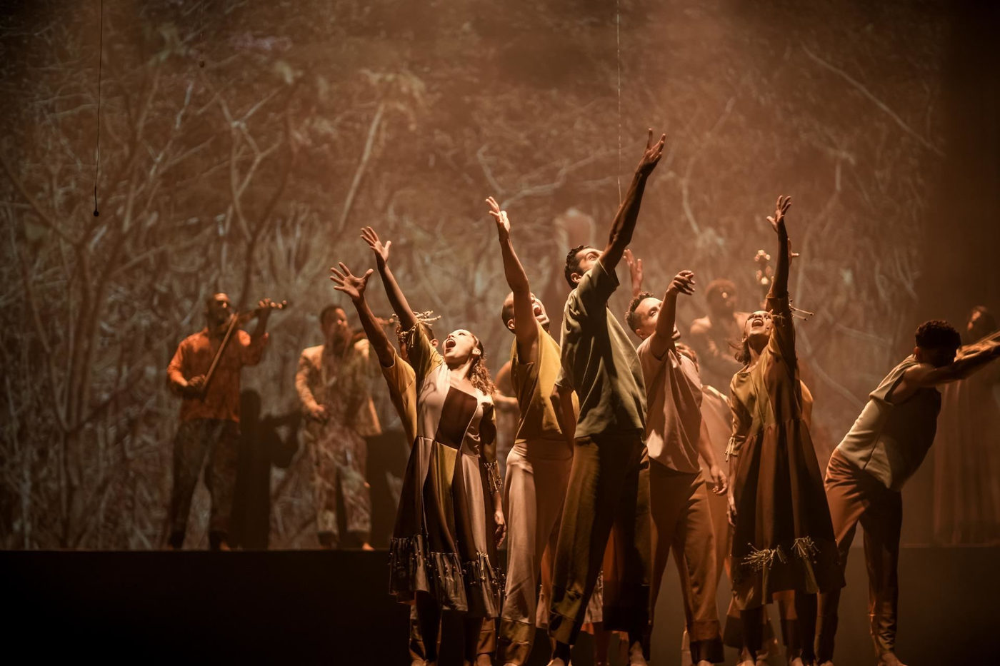

Espetáculo 'CAPIBA, pelas ruas eu vou...' chega a São Paulo celebrando a riqueza do frevo

Com 45 bailarinos-cantores e 19 músicos, o musical transforma o palco em uma festa de música, dança e emoção.
Em agosto, a capital paulista terá o prazer de receber um espetáculo que é uma grande homenagem à cultura e ao folclore pernambucanos: "CAPIBA, pelas ruas eu vou...". Este musical celebra a história de um dos grandes nomes do frevo, o compositor pernambucano Lourenço da Fonseca Barbosa, conhecido como Capiba (1933-1997). Com 45 bailarinos-cantores do Aria Social e 19 músicos no elenco, o espetáculo promete transformar o palco em uma grande festa, misturando música, dança, canto, teatro, fotografia e cinema. As apresentações ocorrem nos dias 5 e 6 de agosto no Teatro Santander, e nos dias 13 e 14 de agosto no Teatro Sabesp Frei Caneca.
"CAPIBA, pelas ruas eu vou..." é uma criação que une o popular e o lírico, com músicas de Capiba performadas por uma orquestra de câmara e coreografias emocionantes. Criado a muitas mãos, o espetáculo estreou em 2022 para comemorar os 30 anos do Aria Social, que atende mais de 450 crianças e jovens em situação de vulnerabilidade social, transformando vidas por meio da arte. A proposta do projeto é valorizar a rica e plural cultura pernambucana, e inclui aulas de dança e música realizadas no bairro de Piedade, em Jaboatão dos Guararapes, na Região Metropolitana do Recife.
Capiba é reconhecido como o maior compositor de frevos pernambucanos, mas sua obra vai muito além desse ritmo, abrangendo valsas, choros, maracatus, sambas, marchas e música erudita. Ele deixou um legado de mais de 200 composições, incluindo a ópera "Missa Armorial". "É isso que mostramos no espetáculo: a multiplicidade e a riqueza do legado de Capiba", afirma a bailarina Cecilia Brennand, presidente do Aria Social e diretora-geral do musical. A direção musical e a regência são da maestrina Rosemary Oliveira, vice-presidente do Aria Social, e a concepção, direção artística e coreografia são de Ana Emília Freire.
Durante cerca de uma hora, o musical apresenta a trajetória de Capiba, nascido em Surubim, no Agreste pernambucano, em 28 de outubro de 1904. Filho de um mestre de banda, Capiba já lia partituras antes mesmo de aprender a ler. Ele morou na Paraíba e, aos 26 anos, mudou-se para o Recife, onde trabalhou no Banco do Brasil e cursou a Faculdade de Direito do Recife, sempre mantendo a música como parte central de sua vida.
"Valsa Verde", uma das composições mais famosas de Capiba, é uma das muitas músicas que servem de trilha para "CAPIBA, pelas ruas eu vou...", entre frevos dos anos 30, valsas apaixonadas, sambas, maracatus, ciranda, marchas e ópera. O espetáculo conta ainda com uma orquestra de câmara e projeções de cinema e fotografias que envolvem o público em uma experiência imersiva. Parte das sessões são exclusivas para instituições de ensino, seguindo o princípio do Aria Social de educação pela arte.
O Aria Espaço de Dança e Arte foi criado em 1991 pela bailarina Cecília Brennand com o objetivo de abrigar e integrar todas as artes e contribuir para sua democratização cultural. Em 2004, foi transformado em Organização da Sociedade Civil de Interesse Público (Oscip), sem fins lucrativos, e passou a se chamar Aria Social. Com ênfase na formação completa de bailarinos-cantores, na introdução ao universo musical e ao empreendedorismo, o Aria Social já produziu 16 espetáculos e impactou mais de 10 mil crianças e famílias. A missão do projeto é promover a transformação humana através da arte-educação, oferecendo formação e profissionalização na música e na dança para 588 crianças e jovens em situação de vulnerabilidade social. Além disso, o Aria Social apoia as famílias desses alunos, oferecendo capacitação em técnicas de artesanato e fomentando o empreendedorismo social para 140 mães artesãs, por meio do projeto Casa de Maria, fundado em 2017.
O espetáculo "CAPIBA, pelas ruas eu vou..." será apresentado no Teatro Santander, localizado na Av. Pres. Juscelino Kubitschek, 2041, Itaim Bibi, São Paulo, SP, nos dias 5 e 6 de agosto de 2024, às 20h. Os ingressos variam de R$30 a R$70 e podem ser adquiridos na bilheteria online ou física do Teatro Santander. As apresentações no Teatro Sabesp Frei Caneca, localizado no Shopping Frei Caneca, R. Frei Caneca, 569, Consolação, São Paulo, SP, ocorrem nos dias 13 e 14 de agosto de 2024, às 20h, com ingressos nos mesmos valores. As sessões são livres e indicadas para todas as idades, com duração de 60 minutos.